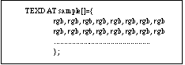
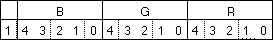
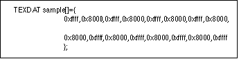

Return to previous page | Return to menu
This is only necessary for textures. The texture name in the attribute data “Texture” is based on this data.
If the texture DGT file is “sample.dgt”,

TEXTB: Texture table L sample: Indicates a label with texture data (file name as it is) hsize, vsize: Texture size (hsize is always a multiple of 8) bgr: 1 pixel of texture data
Each of the three primary colors is represented by 5 bits with a value of 0 to 31.
The data format is as follows.

Example) Assume that the graphic data file called sample.dgt has an 8x2 size white and black checker texture as shown below.
The texture data for this texture will be as follows.

*The polygon attribute data of the material name “SCN” with this texture attached is
ATTRIBUTE(Single_Plane, SORT_CEN, SAMPLE, No_Palet, No_Gouraud, MESHoff, SprNoflip, NoOption)
Caution
For textures, the H size must be a multiple of 8. This is a limitation due to Saturn's hardware specifications.